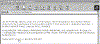
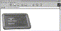
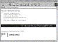

| ||||
Now it is time to look at how the Tutorial Practice page you created will look in a Web browser.
Figure 1. The Preview in Browser button
The Tutorial Practice page is displayed in your default Web browser.

Click image to enlargeFigure 2. The feedback link
The word "feedback" is displayed in color and with underline formatting. As soon as you move the mouse over the word, the pointer changes to a hand. This indicates a hyperlink you can click on.
If you have a properly configured e-mail application installed on your computer, clicking the word will open a new e-mail message window, with your e-mail address filled in as the recipient. Type a message into the message form and send it. If no message window appears, cancel the operation by acknowledging any notifications that may appear.
The hyperlink you created from the image map finds and displays the page describing your personal interests.

Click image to enlargeFigure 3. Clicking on the image map
If you created additional hyperlinks from the words "Photo Album" and "Favorites," repeat step 3 and 4 above by clicking on the appropriate image map hyperlink. In each case, click your Web browser's Back button to return to the Tutorial Practice page.
Note that the file names and their descriptions are properly aligned on the page. Your Web browser does not display the table grid that you saw in the FrontPage Editor while editing the table. This is because you inserted a table with a Border Size of zero.
Figure 4. Displaying a table without borders
You will now test this feedback form by entering some text and submitting the comments to a form results file.

Click image to enlargeFigure 5. Testing the feedback form
If you make a mistake while typing, the Reset push button clears the text in the Scrolling Text Box form field. You can then start over and enter new text.
Clicking the Submit push button processes the text in the form field and at once sends it to the default results file. You can specify the path and file name of this results file in the Form Properties dialog box.
Note: Depending on which Web browser you are using, a security alert may be displayed, cautioning about sending information over an unsecured connection. This is nothing to be alarmed about, as long as you haven't entered any personal information such as credit card numbers, your telephone number, or your home address into the form field. To finish sending the comments from the Feedback form, simply acknowledge the warning message.
After the feedback form is submitted, your Web browser will display a Form Confirmation page, advising you that the information was sent successfully.
Figure 6. Form confirmation
"Return to the form" is a hyperlink which will take you back to the Tutorial Practice page in your Web browser.
Did you find this material useful? Gripes? Compliments? Suggestions for other articles? Write us!
© 1999 Microsoft Corporation. All rights reserved. Terms of use.